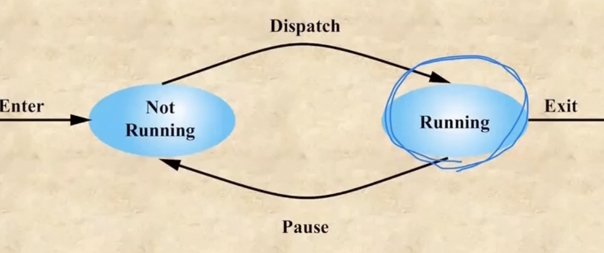
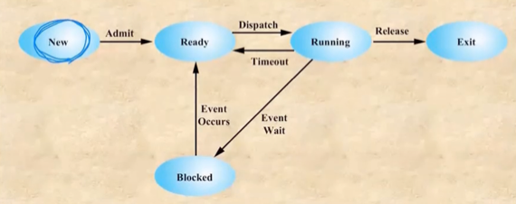
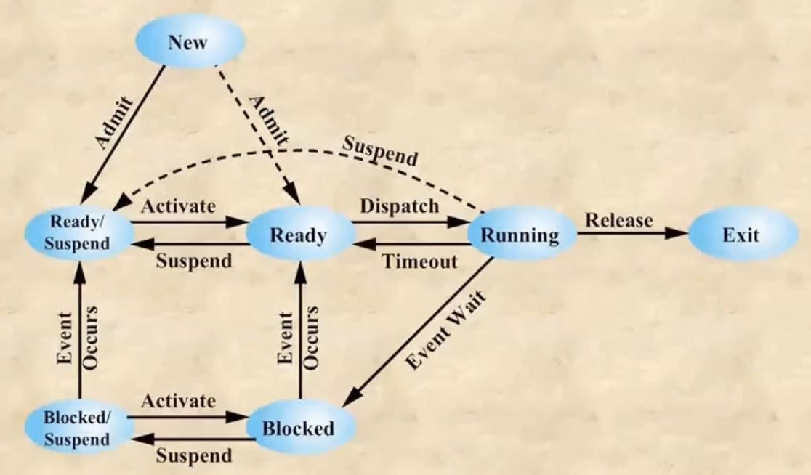
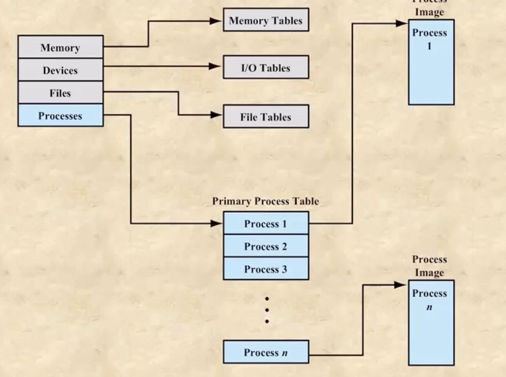
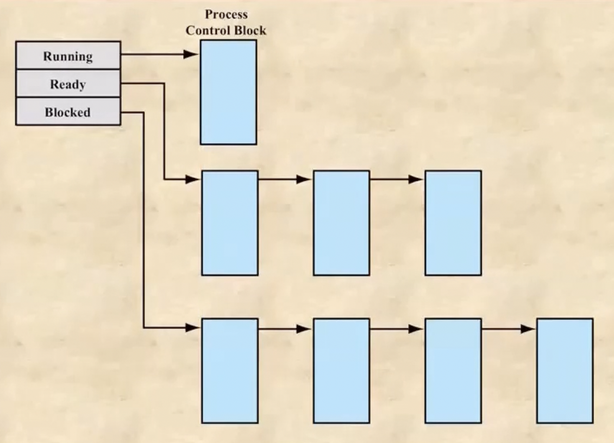

충남대학교 컴퓨터공학과 류재철 교수님의 "운영체제 및 실습" 강의를 필기한 내용입니다.
다소 잘못된 내용과 구어적 표현 이 포함되어 있을 수 있습니다.
프로그램 실행에서의 OS의 역할
- 자원들(메모리 등)을 여러 프로세스들에게 적절하게 분배하고 관리함
- 프로세스가 계속 변경되며 실행되어 동시에 실행되는것처럼 보이게 한다
- 이렇게 프로세스와 IO디바이스들을 관리하는것이 OS가 하는 일이다
프로세스
- 실행의 단위, OS의 관리의 단위, 실행됐지만 아직 죽지는 않은 것
- 프로그램 코드 와 그 코드와 연결된 여러개의 데이터로 구성된다
- 코드(text) : 내가 짠 프로그램 소스파일
- 코드에 연동되는 데이터는 구체적으로 global 변수는 data에, local변수와 함수는 stack에, 동적할당을 위한 공간은 heap에(단 heap은 data와 합쳐 그냥 data로 하나로 퉁쳐서 부르기도 한다), 그리고 나머지 필요한 자료들은 PCB에 저장된다
- OS는 프로세스 단위로 메모리를 할당하고 관리한다
PCB에 저장되는 정보들
- PCB = Process Control Block : 프로세스의 정보들을 담은 구역(자료구조). 프로그램이 프로세스가 되기 위해서는 이 공간을 반드시 할당받아야 한다
- identifier : 유닉스에서 PID같은놈. 프로세스들의 고유 번호이다
- state : 프로세스의 현재 상태. 현재 실행중인건지, 기다리는 것인지 등등의 상태들이 저당된다
- priority : 프로세스들 간의 우선순위. 시스템 프로세스 같은 중요한 것들이 먼저 구동될 있도록 우선순위가 매겨져있다. 하지만 하나의 프로세스가 cpu를 monopolize하는것을 막기 위해 우선순위는 계속 바뀌게 된다
- 그리고 cpu로 들어갈때 레지스터에 쓸 값들 - program counter(다름 실행할 명령어의 주소), memory pointer(이 프로세스가 저장되어있는 메모리의 주소) 등등의 정보들이 저장되게 된다
System, Kernel, User Process
- OS도 하나의 프로그램이므로 OS의 여러 기능들도 프로세스화되어 구동되게 된다
- 이 OS의 프로세스를 system process라고 하며 그 중에서도 중요한 애들인 커널이 프로세스화 된 것이 kernel process(daemon) 이다. Kernel process같은 중요한 기능들은 항상 메모리에 상주한다 <-> 반대로 우리가 만든 프로그램들이 프로세스화되면 user process라고 하는 것
Dispatch, Context switch
- Dispatch : ready상태인 프로세스들 중 가장 우선순위가 높은놈을 running상태로 바꿔 cpu를 할당하는 일을 말함
- Context switch : 프로세스가 전환 후 새로운 프로세스가 실행되는것을 의미함
- Dispatcher : 새로운 프로세스를 Dispatch하여 Context switch하는 일을 전담하는 kernel process
- 여기서 중요한점은 새로운 프로세스가 Dispatch된 이후 새 프로세스가 실행되는것을 보고 Context switch가 일어났다라고 말한다 - 새로운 프로세스로 교체하는 “과정”을 Context switch라고 하는게 아니다 이말이야 - 따라서 Dispatch이후 Context Switch가 일어나는게 맞는거다
Process 실행과정 - 2 state process model

- 프로세스가 생성되면(Enter / Creation) 먼저 **Not Running(Ready)**상태가 된다 - Dispatch를 기다리는 상태
- 이제 이 프로세스가 Dispatch되면 Running상태가 된다 - 실행되는 상태
- 그리고 또 이놈이 실행되다가 타임아웃 등의 인터럽트를 받으면 다시 Not Running의 상태로 간다 - pause된다
- 또 Dispatch되면 Running상태로 가고 이 과정을 반복하가 종료 (Exit / Termination)된다
- 따라서 프로그램이 fork()되어 프로세스로 creation이 됐다가 exit()되어 다시 프로그램의 상태로 termination될때까지 수많은 pause와 dispatch를 거친다
- 하지만 system process들은 잘 terminate되지 않는다 - 중요하므로
- 우리가 코딩할때도. system call을 이용해 creation, dispatch, pause, terminate를 직접적으로 명령할 수도 있다 - fork(), exec(), wait(), exit()
- Not Running중인 프로세스들은 queue로 관리된다→ dispatch되면 queue에서 빠지고 pause되면 다시 queue로 들어간다
sys call : fork()함수
- 프로세스가 실행되다가 fork()가 실행되면 새로 프로세스가 하나 더 만들어지는데 이때 fork()를 호출한놈이 parent 이고 만들어진 놈이 child 이다
- fork()를 호출하면 parent와 동일한 놈이 하나더 child로 만들어지게 된다
- 나머지는 전부 같으나 다른점이 몇가지 있다
- PID(identifier) 가 다르다 - 부모자식은 구별할 수 있어야 하므로
- fork()함수의 리턴값은 부모의 경우 자식의 PID, 자식의 경우 0을 리턴한다
- child프로세스가 끝나기 전에 parent가 끝나면 좀 골치아파진다 - 원칙적으로 child가 끝나야 parent를 끝낸다 - cascade termination 이라고 한다
- 하지만 부득이하게 parent가 끝나면 parent의 parent가 child의 parent로 바뀌게 된다
Termination condition
- Normal completion : 정상종료
- timeout과는 별개로 cpu를 차지하는 총 시간도 중요하다 - 무한루프에 빠졌을 가능성이 있으므로 - cpu를 차지하는 총 시간이 너무 긴 경우에도 강제로 termination하게 된다 - timeout과는 별개의 개념이다 - timeout의 경우에는 cpu를 연속적으로 사용하는 시간을 말하고 이때에는 이 cpu를 잡고있는 총 시간을 말하는거 -무한루프가 아닌 원래 시간을 많이 잡아먹는 일이면 작업관리자에 승인을 요청하는 작업을 해줘야 된다
- Memory unavailable : 더이상 가용 가능한 메모리가 없을 경우
Process 실행과정 - 5 state process model

- New : 새로 들어와서 프로세스로 바꾸는 과정 - 여러 resource들을 할당받는 상태 - 프로세스화가 끝나면 admit되어 다음 단계로 간다
- Ready : 프로세스화가 끝난 상태 - dispatch되어 running되기만 기다리는 상태이다
- Running : dispatch후 실행중인 상태 - 실행이 끝나면 release되어 다음 단계로 간다
- 다만 timeout이 발생하면 다시 ready로 가게 된다 - timeout의 경우에는 어떤 이벤트가 일어나 지금 당장 실행할 수 없는 상태가 아니므로
- ready 상태에 있는 놈들은 queue에서 기다리게 된다
- Blocked : 키보드 입력이라거나 그러한 이벤트로 인해 잠깐 멈춘 상태 - event wait
- 얘네는 지금 바로 다시 실행할 수 있는 상태가 아니기 때문에 ready로는 가지 못하게 되는거다 - 따라서 이벤트가 처리되어(event occurs) 다시 running 가능해지면 running되는게 아니라 ready 단게로 가게 된다
- event queue라는 것이 존재해서 event가 처리될때까지 queue에 머문다 - 그리고 event가 끝나면 ready queue로 옮겨져 또 기다리게 된다
- Exit : 프로세스가 종료되어 new에서의 역순으로 처리되는 과정 - resource를 전부 반납하게 된다
Process Swapping - 7 state process model

- 중요한 이벤트가 발생해서 당장 실행해야 되는데 메모리에 공간이 없으면 덜 중요한 애들이 메모리를 양보하고 하드디스크로 내려간다 - swap-out
- 이벤트가 종료되어 얘네들이 다시 메모리로 올라오는 것을 swap-in 이라고 한다
- 이렇게 프로세스가 잠깐 하드로 내려가게 되는 것을 suspend라고 한다
- 이런 suspend를 관리하기 위해 suspend state가 존재한다 - ready상태에서 swap-out를 먹으면 ready / suspend로 가고 blocked 상태에서 swap-out를 먹으면 blocked / suspend로 간다
- 그리고 얘네들이 다시 swap-in을 먹으면. 원래의 상태로 돌아오게 된다 - 무조건 ready로 올라오는게 아니다!!
- 당연하게도 일단 메모리에 있어야(ready 혹은 blocked여야) running 상태로 갈 수 있다 - suspend에서 바로 running으로 가지는 못한다
- 하지만 running에서 suspend를 먹어서 내려갈 수는 있다
- 또한 지금 메모리가 부족한 경우에는 프로세스가 만들어지자마자 ready / suspend로 갈 수도 있다
Figure 3.11

- processes에 process table의 시작주소가 들어있고 그 테이블에 process들의 주소들이 들어있다
- 여기서 process table이 PCB table이다 - 실제로는 프로세스를 구성하는 PCB, 데이터 등등이 어느 한곳에 같이 모여있는게 아니다 이말이야 - 그림에서의 process image에는 PCB는 안들어있고 그 나머지인 text, data, heap등이 저장되어 있는 구조이다
- process table은 pointer를 이용해서 가변길이로 할 수도 있지만 중간에 포인터를 잃어버리면 나가리기 때문에 불변길이로 선언하는 경우가 많다 - 다만 n이 시스템에 존재할 수 있는 process들의 총 갯수이기 때문에 n을 적당한 크기로 정하는 것이 중요하다 - n이 너무 크면 메모리를 너무 많이 먹고 n이 너무 작으면 process가 생성되기 힘들다 - 이 table의 일부가 비어있어야 process가 생성될 수 있기 때문
- 뭐 나머지 memory table, io table 등등도 다 비슷하다
- 그리고 이 table들의 주소를 담고 있는 structure가 존재하는 형태이다
- process table은 메모리에 상주하게 되는데 보통 이 n값이 굉장히 크기 때문에 메모리의 많은 부분을 차지하게 된다 - 그래서 PCB의 중요한 부분만 남기고 나머지 PCB중 덜 중요한 정보들은 하드디스크로 넘기게 되는데 이 부분이 u-area이다 - 다만 running 상태가 되면 이 u-area는 메모리로 다시 올라오게 된다 - state에 따라 어디 있을지 결정되는 것
Process creation 과정
- creation : Id 만들기 → process를 위한 공간 할당 → PCB 생성 → 필요한 포인터들 연결 → 다른 자료구조들 생성
- terminate : 이것의 역순이다
Ready, Blocked Queue의 구현

- 보면 큐라고 해서 이 프로세스들이 물리적으로 막 움직이는게 아니다 - 이렇게 linked-list형태로 구성되게 된다
- 루트 노드에는 첫번째 프로세스의 PCB.state의 주소가 담기고 이 PCB.state에는 다음 프로세스의 PCB.state의 주소가 담기는 식으로 다음 프로세스를 계속 가리키는 식으로 큐가 구현되어있더라 이말이야
Interrupt vs trap
- Interrupt : 프로세스의 외부에서 이벤트가 발생해서 멈추는 것
- interrupt가 발생하면 실행 모드가 user → kernel mode로 바뀐다
- user의 process가 멈추고 kernel의 interrupt handler가 실행되게 된다 - 다음 실행할 instruction의 주소가 interrupt handler의 첫주소로 설정되는 것
- interrupt가 끝나면 다시 원래의 instruction 주소로 돌아오며 실행모드도 user mode 로 바뀌게 된다
- Trap : 프로세스의 내부에서 이벤트가 일어나 멈추는 것
Context switching이 일어나기까지의 과정
- 중단된 시점의 레지스터 값을 전부 진행중인 프로세스의 메모리로 옮긴다(stop & save)
- state를 바꾼다(running → ready나 다른 상태들)
- queue에 추가한다
- 다음 process를 선택한다(select)
- 그 process의 state를 변경한다(ready → running)
- process의 메모리에서 레지스터 값들을 다 가져오는 등 새 프로세스의 중단지점으로 다 restore한다(restore)
- 바뀐 process를 진행한다